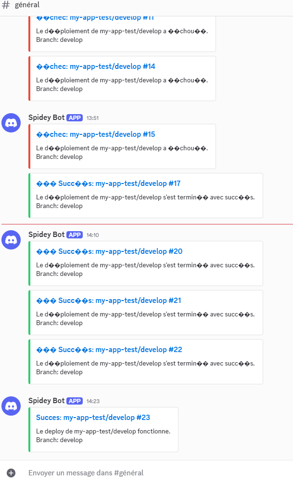
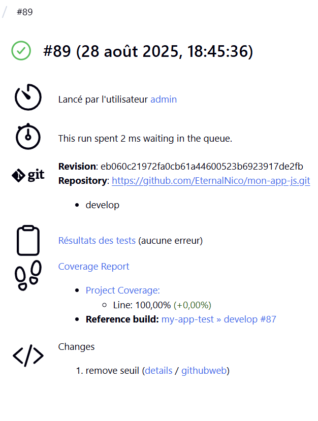
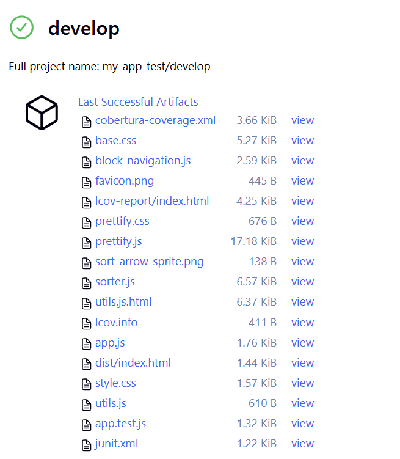

J’ai configuré un environnement sur VS Code pointant vers le répertoire de mon conteneur Docker, dans lequel j’ai installé et configuré Jenkins. J’ai également installé le plugin NodeJS pour Jenkins afin de gérer une pipeline de déploiement pour un projet Node.js.
npm install.package.json :"jest": {
"reporters": [
"default",
["jest-junit", { "outputDirectory": "tests", "outputName": "junit.xml" }]
]
}
Jenkinsfile pour que Jenkins récupère le rapport de test généré par Jest (test-results.xml).test-results.xml est bien créé après l’exécution des tests.develop dans le dépôt Git.main ou develop.J’ai ajouté un test incorrect pour simuler une erreur :
test('Tests échoué', () => {
expect(isValidNumber(Infinity)).toBe(true); // Ce test échoue car `isValidNumber(Infinity)` retourne `false`
});
Résultat initial :
expect(received).toBe(expected) // Object.is equality
Expected: true
Received: false
Le job de test affichait une erreur dans la Pipeline Overview.
Après correction :
Test Suites: 1 passed, 1 total
Tests: 6 passed, 6 total
Snapshots: 0 total
Le job de test est passé en success.
J’ai créé un serveur Discord et configuré un webhook pour recevoir des notifications automatiques depuis Jenkins.
Dans le Jenkinsfile, j’ai ajouté une section post pour gérer trois cas :
Processus :
payload.json au format attendu par l’API Discord.curl avec le webhook.Résultat :

package.json pour générer un rapport Cobertura :"jest": {
"collectCoverage": true,
"coverageDirectory": "coverage",
"coverageReporters": ["text", "cobertura"],
"rootDir": ".",
"reporters": [
"default",
["jest-junit", { "outputDirectory": "/tmp/tests", "outputName": "junit.xml" }]
]
}
publishCoverage avec des seuils :publishCoverage adapters: [
coberturaAdapter('coverage/cobertura-coverage.xml')
],
failNoReports: true,
globalThresholds: [
[thresholdTarget: 'LINE', unhealthyThreshold: 70.0, unstableThreshold: 80.0],
[thresholdTarget: 'BRANCH', unhealthyThreshold: 60.0, unstableThreshold: 70.0]
]
Le plugin Code Coverage API a généré une NullPointerException car certaines métriques (comme CLASS ou METHOD) étaient manquantes dans le rapport Cobertura. Le plugin tentait d’appliquer des seuils sur des valeurs inexistantes.
J’ai supprimé la section globalThresholds pour éviter les erreurs :
publishCoverage adapters: [
coberturaAdapter('coverage/cobertura-coverage.xml')
],
failNoReports: true
Désormais, Jenkins :
Vue du rapport dans Jenkins :

J’ai ajouté une étape pour archiver les artefacts :
stage('Archive Artifacts') {
steps {
echo 'Archivage des artefacts...'
archiveArtifacts artifacts: 'coverage/**/*, tests/**/*, dist/**/*', allowEmptyArchive: true
}
}
Résultat :

npm install et npm cinpm install :package-lock.json si nécessaire. Utile en développement, mais moins adapté à la CI/CD car il peut introduire des variations entre les builds.npm ci :package-lock.json. Plus rapide et plus fiable pour des builds reproductibles en CI/CD.when dans les étapesJ’utilise when pour exécuter des étapes conditionnellement :
main ou develop.postLes blocs post me permettent de :
success, failure, unstable).Avant de déployer une nouvelle version, je sauvegarde l’ancienne. En cas d’échec ou de bug, je peux restaurer rapidement l’application à son état précédent.
npm audit ou des outils comme Snyk pour scanner automatiquement les vulnérabilités des dépendances.node_modules ou les artefacts intermédiaires pour réduire les temps de build.Ce TP m’a permis de :
✅ Configurer une pipeline CI/CD complète avec Jenkins et Node.js.
✅ Gérer les tests, la couverture de code, et les notifications.
✅ Automatiser des actions post-build (archivage, notifications, backup).
✅ Identifier des axes d’amélioration pour la sécurité, la performance et la fiabilité.
Prochaines étapes :
Étape 1 : Installation via l'interface Jenkins
J'ai ouvert Jenkins (http://localhost:8080), puis je suis allé dans "Manage Jenkins" → "Manage Plugins". Dans l'onglet "Available", j'ai recherché et installé :
Étape 2 : Vérification de l'installation
Je suis retourné au tableau de bord Jenkins, j'ai vérifié la présence du bouton "Open Blue Ocean" et la présence des sections Slack et Gitea dans "Manage Jenkins" → "Configure System".
Qu'est-ce que Blue Ocean ?
Blue Ocean est une interface moderne pour Jenkins qui améliore la visualisation des pipelines.
Résultat :
Configuration
J'ai cliqué sur "Open Blue Ocean" dans le menu Jenkins, puis j'ai exploré l'interface : vue des pipelines, éditeur visuel, historique des builds. Blue Ocean n'a pas nécessité de configuration supplémentaire.
Exercice 2.1 : J'ai créé un pipeline simple via Blue Ocean et j'ai observé la différence avec l'interface classique.
Résultat :
Étape 1 : Préparation de Slack
Étape 2 : Configuration dans Jenkins
Étape 3 : Test des notifications
J'ai créé un job simple pour tester :
pipeline {
agent any
stages {
stage('Test') {
steps {
echo 'Test du pipeline'
}
}
}
post {
always {
slackSend(
channel: '#jenkins-notifications',
color: 'good',
message: "Test Jenkins - Build ${env.BUILD_NUMBER}"
)
}
}
}
Exercice 3.1 : J'ai configuré les notifications Slack et j'ai testé avec un pipeline simple.
Connexion :
Résultat :
Étape 1 : Configuration des credentials Git
Étape 2 : Configuration des webhooks (optionnel)
Si j'ai utilisé Gitea :
Étape 3 : Test avec un repository
Exercice 4.1 : J'ai connecté un repository Git et j'ai configuré un pipeline automatique.
Résultat :
Exemple de Jenkinsfile complet
pipeline {
agent any
stages {
stage('Checkout') {
steps {
echo 'Récupération du code'
checkout scm
}
}
stage('Build') {
steps {
echo 'Construction de l\'application'
// Ajoutez vos commandes de build ici
}
}
stage('Test') {
steps {
echo 'Exécution des tests'
// Ajoutez vos commandes de test ici
}
}
stage('Deploy') {
when {
branch 'main'
}
steps {
echo 'Déploiement en production'
// Ajoutez vos commandes de déploiement ici
}
}
}
post {
success {
slackSend(
channel: '#general',
color: 'good',
message: """
Build réussi !\nProjet: ${env.JOB_NAME}\nBuild: ${env.BUILD_NUMBER}\nBranche: ${env.BRANCH_NAME}"
)
}
failure {
slackSend(
channel: '#general',
color: 'danger',
message: """
Build échoué !\nProjet: ${env.JOB_NAME}\nBuild: ${env.BUILD_NUMBER}\nVoir: ${env.BUILD_URL}"
)
}
}
}
Test du pipeline intégré
J'ai créé un repository avec ce Jenkinsfile, configuré le job multibranch pipeline, puis fait un push pour déclencher le build. J'ai vérifié la visualisation dans Blue Ocean, les notifications Slack et l'intégration Git.
Exercice 5.1 : J'ai créé un pipeline complet utilisant les trois plugins et j'ai testé toutes les fonctionnalités.
Résultat :
Grâce à l’ajout du code fourni dans le TP, j’ai pu lancer des pipelines paramétrés : je peux choisir l’environnement de déploiement (dev, staging ou prod) et activer ou non l’option pour ignorer les tests avant le déploiement.
Voici un test de lancement de pipeline avec paramètre comme le montre l'image ci-dessous :
IHM Jenkins pipeline avec paramètres :
Résultat de la pipeline (avec "skip tests") :
Voici le résultat sans la case cocher "skip test"
Résultat de la pipeline (sans "skip tests") :
Document généré automatiquement à partir du README.md
Généré le : 19/09/2025 07:30:23